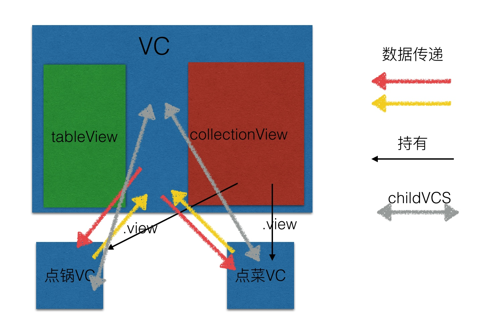
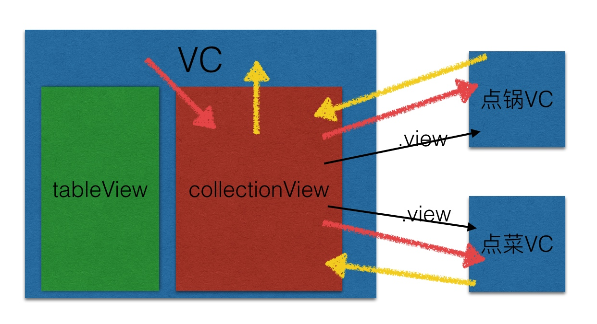

左右联动效果再实现
在微指的时候,商户详情界面中就存在左右联动,具体实现可见MKShowDetail .当然这次和微指的时候有所不同,层级结构更深,所属视图跨控制器.下面是正文👇
数据结构
在海底捞Pad版本项目中,点菜和点锅是两种完全不同的东西,但是又都属于点菜类中,所以数据结构比较复杂:
点锅: 大分类 --> 具体的锅底
点菜: 大分类 --> 小分类 --> 具体菜品
需求: 大分类下如果有小分类并且小分类个数大于1个的时候显示小分类,如果小于一个则不显示.
这样两种数据结构完全不同的数据需要整合成相同的显示样式,跟同事讨论后决定粗暴的也是最简单的方法修改点锅数据,给大分类后面强行包裹一层小分类.
视图设计
数据层搞定了,又到了显示问题了:
分类显示马上想到了tableView,但是点锅和点菜互不干扰,我想到的就是分成两个section,这时又有一个问题,需求又要求大分类和小分类的样式是不一样的,不一样的,不一样的...怎么办? 使用tableViewSectionHeader.按大类进行划分,点锅和点菜之间的区分用数据.小分类则用cell表示.
tableViewSectionHeader 设计
既然已经决定了用headerView那么怎么设计呢?
- 点击事件
- 确定具体点击的是哪个
所以我在设计headerView的时候让它在显示数据的时候也要传入当前的index:
func setName(_ name: String, index: Int) {
nameLabel.text = name
self.index = index
}
(ps: 不要吐槽,刚开始用Swift写项目😂)
这样我自己记录下传入的index当点击事件的时候再告诉外界具体点击的是哪一个:
@objc private func labelClick() {
delegate?.didSelectedHeader(section : self.index)
}
很明显的知道我是使用代理进行数据传递的..说下为啥不使用属性记录index?? 任性😁
到这里headerView基本完成了,控制器实现代理方法就好了,然后根据index让右侧具体的菜品滚动到相应的位置就好了...
点锅点菜区分&跳转
接上,左侧显示的大分类与小分类都是统一的了,但是右侧的点菜与点锅是分开的锅是锅,菜是菜.怎样区分呢?使用两套数据源,然后随时切换>?? 不行🚫...要求要像淘宝或者京东详情页那样,可以滚动到下一页还可以滚回到上一页...怎么办? 使用两个collection控制器,一个显示点锅数据,一个显示点菜数据.这样做能够尽量减少某一个单独的控制器中存在过多的逻辑代码.那么谁来承载这两个控制器呢?再创建一个控制器然后把这两个放进去? 这样也能实现,就是控制器太多了...我想用的是一个scrollow来包裹这两个控制器,好处是能够控制显示那个控制器,逻辑也比较简单..比如说滚到第一个视图:
UIView.animate(withDuration: 0.25, delay: 0, options: .layoutSubviews, animations: ({
self.contentView.contentOffset = CGPoint(x: 0, y: 0)
}), completion: nil)
直接设置scrollow的contentOffset就可以了
怎么做到电商网站中详情页与图文详情页滚动呢? 以当前项目为例(点锅在首屏),最简单的一种实现方式:
使用下拉刷新&上拉加载更多实现
- 点锅页面上拉加载更多跳转到点菜页面(通过上面代码设置
scrollow的contentOffset实现) - 点菜页面下拉刷新跳转到点锅页面,实现方式同上..
这样很容易实现两个页面之间的跳转.
右侧具体菜品数据处理
终于到数据处理了...这里的主要矛盾点在与collectionView是一个二级结构数据即可分成section与具体的Item,点锅数据还好,可以强制抹除大分类和具体内容之间强加的子分类封装,那么点菜数据怎么处理呢?毕竟右侧数据滚动后还要通知左侧视图跳转到相应的分类...
我想到的一种处理方式,可能不是最好的,但是这是我在短时间内想到比较行之有效的方法:
把点菜数据也通过一层操作转成两层数据: 三层数据 --> 遍历 --> 数组 + 字典
具体点就是遍历三层数据,然后使用IndexPath当做 key ,具体的Item数组当做 value 这样就转换成立一个二级结构数据.具体IndexPath中section存放原有的大分类信息,row存放子分类数据信息..这样我们就可以通过 key 找到原有的数据结构信息,然后通过 key 把原有的信息传递到tableView,实现联动.
具体联动效果实现
左侧点击后使用 collectionView?.scrollToItem(at: IndexPath(item: 0, section: section), at: .top, animated: true) 让右侧数据滚动到相应位置,关键是右侧滚动怎么判断左侧滚动到相应位置
在scrollViewDidScroll方法中获得当前显示的Item,具体计算方法如下:
private func minCurrentSection(collectionView:UICollectionView) -> Int {
// 根据屏幕的某一坐标,获取当前的index
// 将collectionView在控制器屏幕的点转化成collectionView上的坐标
let topPoint = CGPoint(x: UIScreen.main.bounds.size.width*0.5, y: 64)
let pInView = view.convert(topPoint, to: collectionView)
// 获取这一点的indexPath
let indexPathNow = collectionView.indexPathForItem(at: pInView)
// 赋值给记录当前坐标的变量
return indexPathNow?.section ?? 0
}
这样就能够得到当前Item的section,点锅数据就可以直接让row等于0 然后直接回调就OK了,点菜数据还有些差别:
点菜需要返回具体的indexPathNow而不是只返回所在section,因为我们需要返回来的index寻找所在的Item
guard let cell = collectionView?.cellForItem(at: index) as? OrderDishOrPotCollectionCell else {
return
}
delegate?.orderDishCurrent(position: IndexPath(row:cell.index.row , section: cell.index.section))
如上,我在cell中存放一个使用元组的属性
// 记录对应的大分类与小分类
var index:(section:Int,row:Int) = (section: 0,row: 0)
处理菜品数据的时候所说的,点菜比较特殊我用IndexPath来记录原先所在的大分类与小分类,那么这里的属性就是记录Key中IndexPath所对应的值.我们既然能够找到这个Item那么问题就都解决了,就像上面代码中的回调.
注意
因为这次需求是右侧数据滚动的过程中让左侧数据及时响应,而不是滚动结束的时候响应,所以需要判断是触摸滚动还是左侧数据点击后右侧数据滚动,毕竟两侧联动吗不做处理的话点击右侧数据左侧滚动,在左侧数据滚动的过程中又会及时回调让左侧数据滚动..
思考🤔
第一种:

第二种:(目前采用)

第一种是所要展现的内容控制器是底层控制器的自控制器
第二种是所要展现内容的控制器在collectionView中,collectionView将不仅仅是一个视图而是变成了一个中间层
这两种方式那种更好?
--- 12.7 ----
需求有变动,不过改动起来看,还是第二种修改方便些😂,所有的逻辑跳转代码没有混合在最外层VC.